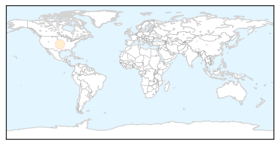
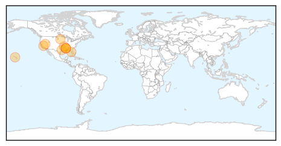
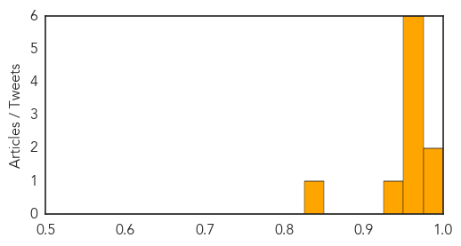

Measles
30-Day Web Trend
30-Day Twitter Trend
0 alerts, 0 warnings

Article Locations
Article Confidences

Top Articles:
Top Tweets:
-
No tweets found for Jul 28, 2015
West Nile Virus
30-Day Web Trend
8 alerts, 3 warnings

30-Day Twitter Trend
0 alerts, 0 warnings

Article Locations
Article Confidences
Top Articles:
- 0.993
- Los Angeles: South Bay youth the 1st human West Nile virus case of 2015 in county
- 0.976
- A New Way to Predict West Nile Virus Moves Forward
- 0.974
- Mosquito-borne disease advisory issued for Hillsborough County
- 0.973
- 4 cases of West Nile virus reported so far this year in South Dakota
- 0.973
- Arkansas confirms first case of West Nile virus
- 0.968
- Second Case Confirmed for Mississippi; Other States Report Mosquitoes Testing Positive For Virus
- 0.968
- First human case of West Nile virus reported in Montgomery County
- 0.959
- L.A. County sees its first human case of West Nile virus this season
- 0.947
- 2nd West Nile case reported in state this year
- 0.846
- Mississippi Has Second West Nile Case
Top Tweets:
-
No tweets found for Jul 28, 2015